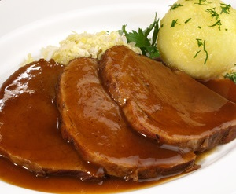

Fleisch-Gericht

Zutaten:
| Kartoffeln | 150 g |
| Rindfleisch | 350 g |
| Sauerkraut | 100 g |
| Rinderbrühe | 1 EL |
| Wasser | 150 ml |
| Mehl | 2 EL |
| Salz, Pfeffer | 1 Priese |
Zubereitung:
1.Schritt: Kartoffeln in Wasser kochen mit etwas Salz
2.Schritt: Fleisch in einer Pfanne mit etwas Öl anbraten
3.Schritt: Rinderbrühe aufkochen
4.Schritt: Mehlschwitze in einer Pfanne machen
5.Schritt: Rinderbrühe in die Mehlschwitze gebne und gut verrürren
6.Schritt: Fleisch mit Kartoffeln und Sauerkraut anrichten und mit Soße übergießen